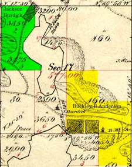
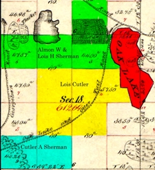

Becker County - 1929 |
Becker County, located in northwest central Minnesota, was established in March 18, 1858 and the first european settlers came to the county about ten years later. Government surveying to establish townships boundaries started in 1870 and was completed in 1872.
|  Audubon Township Survey - 1871 |
The first three settlers came to Audubon Township on the June 28, 1869. Neither the township or section lines had been run in this part of the county, so none of these settlers had any means of knowing what section they were living on for a whole year.
|  Detroit Township Survey - 1872 |
The first three settlers came to Detriot Township on the June 28, 1868. They were Henry Way, Almon Worthy Sherman and L. D. Sperry. Each of them took claims at Oak Lake, Henry Way on the north end of Oak Lake, Almon Sherman on the west shore of Oak Lake, and L. D. Sperry also on the west shore of Oak Lake, all close to the old White Earth and Red River Trail.
In the spring of 1869 a party of men in the employ of the Northern Pacific Railroad Company came through from St. Cloud. During the summer of 1870, a train of buggies and wagons came into the area. There were fifteen of them and they called at Henry Way's place and wanted to buy a sheep. They were looking for a place to locate a railroad.
The city of Detroit Lakes was founded by Colonel George Johnston in 1871. The city grew quickly with the construction of the Northern Pacific Railroad. In 1877, an election finally decided that Detroit Lakes, then known as Detroit, was to become the county seat. Detroit won the election by a ninety percent majority. The nearby cities of Frazee, Lake Park, and Audubon were also in the running for the county seat. By 1884, Detroit Lakes had many businesses, including the Hotel Minnesota, the Lakes Hotel, a bank, a newspaper, and an opera house. In 1884, the first county courthouse was built in Detroit Lakes.